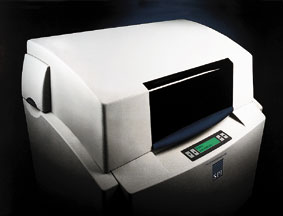
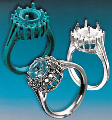
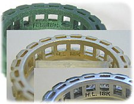

Hrant Arzuman
Genel Md.
Pandora Tasarým & Uygulamalarý
Kasým 2005, Ýstanbul
Not: Ýlk defa TurkCADCAM.net
Dergisi Ocak-Þubat 2006 Sayýsýnda yer almýþ bu makale, Ekim 2008'de TurkCADCAM.net portalýndan yayýnlanmaya baþlamýþtýr.
Türkiye'deki kuyumculuk sektöründe sekiz dokuz yýl öncesine kadar sadece sözü edilen fakat kimsenin olmasýna ihtimal vermediði "makinede kalýp yapma" kavramý, 4C Mühendislik firmasýnýn getirdiði kuyumculuða yönelik 3D CAD programý (JewelCAD) ve 3D Printer makinesi (ModelMaker II) ile hayat buldu. Uzunca bir müddet, bilgisiz sektör üyeleri ve eleman yetersizliðinden dolayý bu teknoloji pek de hayatýmýzý deðiþtirmedi. Fakat, kuyumculukta hýzla yükselen ihracat rakamlarý, sektörün yurtdýþý rakipleri ile zorlu bir kalite yarýþýna girmesine sebep olurken, kuyumculuðu kaliteli þekilde üreten insanlara yeterli ilgiyi göstermeyen sektör, rekabet avantajýný kaybediyordu. Artýk ülkemizde daha kaliteli iþler üretilmesi gerekirken, elimizde daha az kalitede üreticiler vardý. Baþta ihracat yapan firmalar olmak üzere tüm sektör üyeleri yeni bir arayýþýn içersine girmek zorunda kaldý. Bu meyanda 4C Mühendislik, çok azýnýn kabullenebileceði, kuyumculuk sektörüne getirmiþ olduðu bir teknolojiyi kanýtlamaya çalýþýyordu.
Günümüzde halen makinede kalýp üretiminin saðlýklý olmadýðýný iddia edenler olsa da artýk elde çok iyi kalýplar üreten ustalar bile teknolojiye dört elle sarýldýlar. Keza piyasa, üreticilerini makinede kalýp üretenler ve makinede kalýp üretmeyenler þeklinde ikiye ayarmýþ durumda. Makinde kalýp üreten üreticiler ürün yelpazesine istenilen her modeli kolaylýkla eklerken geleneksel yöntemlerle kalýp yapan üreticiler bu durumla baþa çýkmakta oldukça zorlanýyorlar.
Unutulmamasý gereken bir unsur da þudur ki; teknolojiyi kullanmak her zaman maliyetleri düþürmüyor. Yapýlan yüksek makine ekipman yatýrýmlarý, kalifiye eleman giderleri kalýp maliyetlerini oldukça arttýrdý. Fakat þu inkâr edilmez bir þey ki ucuza mâl edilmiþ kalitesiz bir kalýbýn getirisi, pahalýya mâl edilmiþ kaliteli bir kalýba göre daha az ve daha zor rekabet þansý yaratýr. Teknolojik yöntemler ile üretilen kalýplarýn maliyetlerinin yüksek oluþu, teknolojiye karþý çýkan kesimin sürekli öne sürdüðü bir olumsuzluk sebebi olurken, sermayesi olan firmalar ise ekipmanlarý kendi bünyelerine alarak ve vasýfsýz elemanlarý yetiþtirip ucuz iþ gücü üreterek düþük maliyetli ve istenilen kalitede kalýp üretmeye devam ediyorlar. Fakat buna raðmen iþi sadece kalýp üretmek olmayan bu firmalar bu teknolojiye ya çok geç adapte oldular ya da hiç olamadýlar.
Her iþ sektöründe olduðu gibi kuyumculuk sektöründe de birçok yan sanayi firmasý bulunmakta. Yarý mamul üreten firmalar, malzeme tedarikçileri, ifrazatçalar, dökümcüler v.s. Bir yan sanayi firmasý sadece yaptýðý iþe odaklanmasý sebebi ile daha verimli, daha kaliteli ve daha ucuza ürün üretebilmektedir. Pekiyi, kuyumculuk sektörü birçok iþini yan sanayi firmalarý ile görürken kalýp ihtiyacýný nasýl bir destekle ve nasýl bir güvenle baþka bir firmadan temin edebilirdi? Keza kalýp, bir firmanýn en önemi etiketidir. Her ne kadar bazý firmalar yaptýklarý modellere patent alarak koruma altýna asla da bir çok firma hýzla tüketilen yeni modellerine patent alma gereði dahi duymuyor. Neredeyse tüm iþ hacmi ürün yelpazesine baðlý olan bir iþ var ortada. Bir firmanýn elinde olan bir model çok hýzlý bir þekilde baþka firmalar tarafýndan üretilebiliyor günümüzde.
Bu düþünceler ortamýnda geç de olsa bilgisayar destekli kalýp üreten hizmet bürolarý birkaç yýldýr teker teker açýlmaya baþladý ve aralarýna yeni bürolar katýlmaya devam ediyor. Þu sýralar sayýsý iki elin parmaklarýný geçmeyen bu hizmet bürolarý -ya da biz onlara Teknolojik Model Üretim Birimleri diyelim-, birçok firmanýn kalýbýný üretiyor. Çalýþtýklarý firmalar yaptýrdýklarý kalýplardan kâh memnun, kâh þikayetçi. Fakat su götürmez bir gerçek var ki üretilen kalýp adetleri eski metotlar ile üretilmeyecek düzeyde fazla. Zaman zaman kendi bünyesinde makine ekipmaný olan firmalar dahi bu atölyelere kalýp ürettiriyorlar. Bu da þunu gösteriyor ki kalýp atölyesini kendi bünyesinde kuran bir firma yaptýðý iþten memnun kalmayabiliyor. Bunun çok deðiþik sebepleri var, yetiþtirdiði elemanýn verimli olamamasý, yatýrým yapmýþ olduðu ekipmanlarý yeterli düzeyde kullanamamasý gibi.
*Not: Kuyumculuk sektöründeki "Kalýp" kavramý diðer sektörlere kýyasla farklýlýk arz etmektedir: Kalýp, ilk üretilen numune ürüne/modele/takýya verilen isimdir. Buna master model de denebilir. Seri imalat amacýyla diðer tüm ürünler bu "kalýp" referans alýnarak/kullanýlarak yapýlýr.
Ýlgili rapor/makale:
Ýmalatta Mükemmele Doðru; Otoinþa Teknolojileri > Uygulama Sahalarý
> Kuyumculuk: |